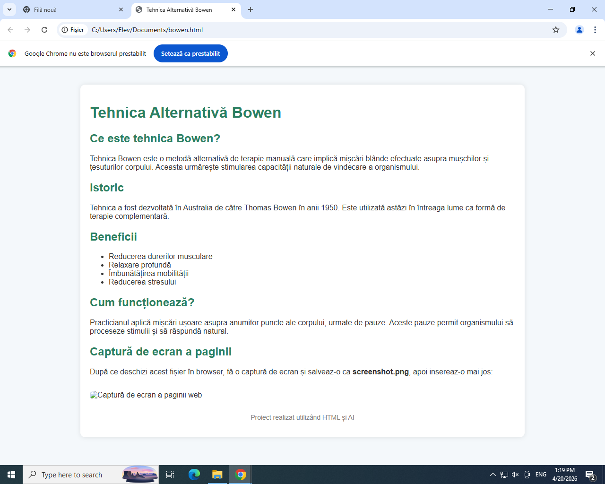

Tehnica Bowen este o metodă alternativă de terapie manuală care implică mișcări blânde efectuate asupra mușchilor și țesuturilor corpului. Aceasta urmărește stimularea capacității naturale de vindecare a organismului.
Tehnica a fost dezvoltată în Australia de către Thomas Bowen în anii 1950. Este utilizată astăzi în întreaga lume ca formă de terapie complementară.
Practicianul aplică mișcări ușoare asupra anumitor puncte ale corpului, urmate de pauze. Aceste pauze permit organismului să proceseze stimulii și să răspundă natural.
După ce deschizi acest fișier în browser, fă o captură de ecran și salveaz-o ca screenshot.png, apoi insereaz-o mai jos:
